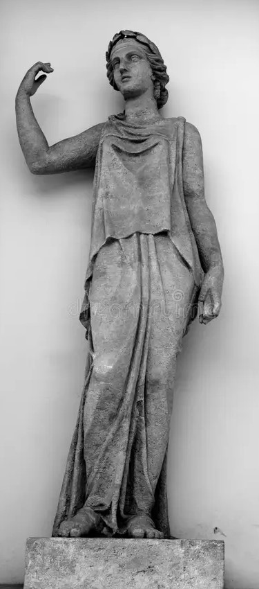

Latona
Namen
- lateinisch: Latona
- griechisch: Leto
Tätigkeitsfeld
Göttin der Mutterschaft und Geburt:
- galt als Schutzgöttin der Mütter und Schwangeren
- wurde bei Geburten um Beistand angerufen
Mutter von Apollo und Diana:
- zentrales Element ihres Mythos: Scchwangerschaft und Geburt der Zwillinge
- Beschützerin ihrer Kinder Apollo und Diana
- Verehrung für ihre mütterliche Fürsorge und Stärke
Verbindung zur Natur:
- enge Beziehung zu wilden, unberührten Orten
- Verbundenheit mit der schwimmenden Insel Delos
symbolische Bedeutung:
- Verkörperung mütterlicher Liebe und Ausdauer
- stand für den Triumph über Widrigkeiten
Attribute
- Schleier oder Schutzdecke
- Wolf
- Lorbeerkranz
- Insel Delos (Geburt des Apollo und der Diana)
- mütterliche Ausstrahlung
